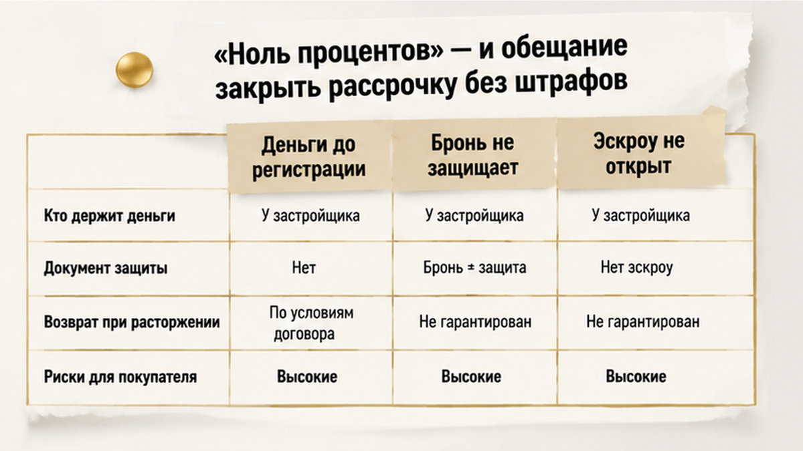
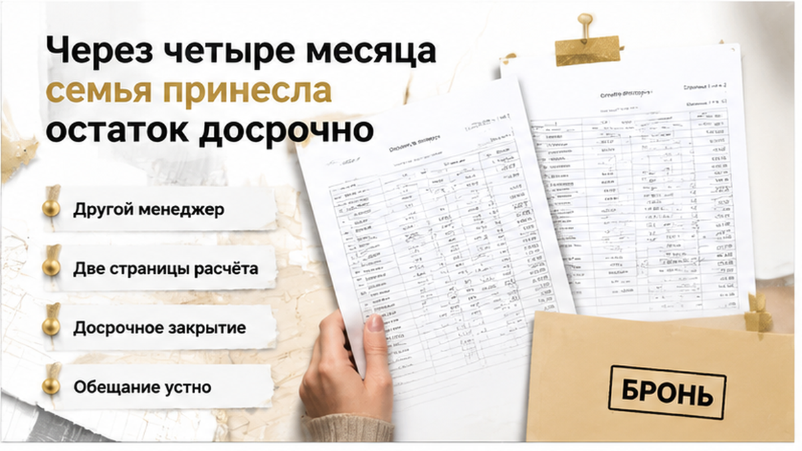
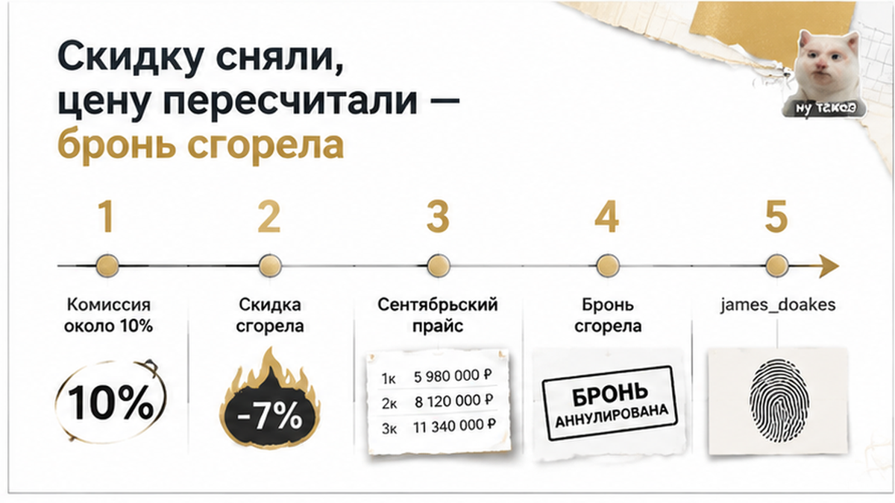
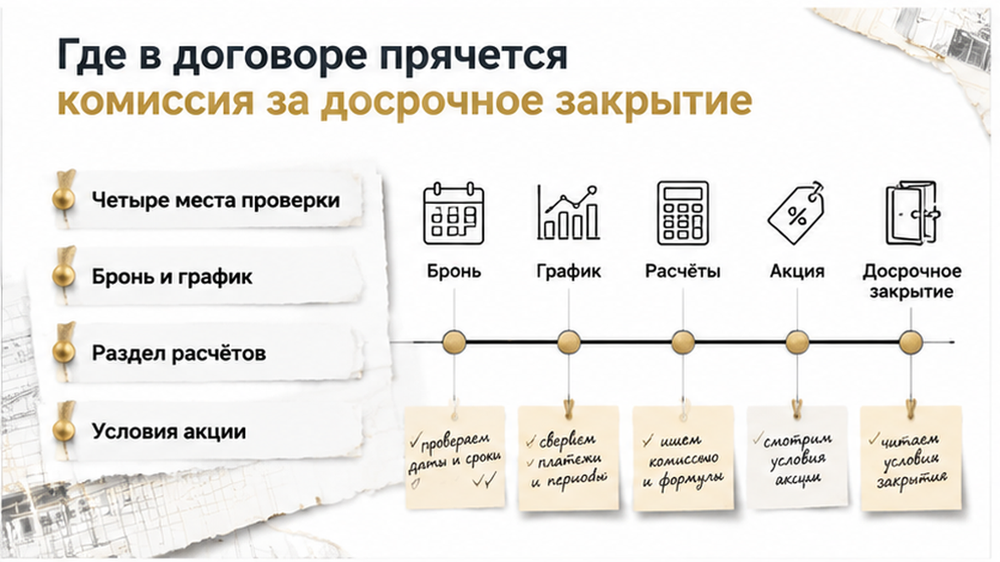

Четыре месяца семья из Тюмени спокойно платила по графику рассрочки от застройщика, а на пятый привезла в офис весь остаток — и услышала, что закрыть его досрочно будет стоить ещё около десяти процентов сверху. Деньги собрали раньше срока: продали вторую машину, дождались годовой премии, добавили вклад. К комиссии в тот же день добавили второе: скидка по акции, ради которой всю сделку и затевали, при досрочной оплате не сохраняется, а цена пересчитывается по сентябрьскому прайсу. Подписывать договор долевого участия на таких условиях они отказались — и часть уже внесённых денег осталась у застройщика по условиям брони. Расскажу изнутри, потому что ловушка тут не в застройщике-злодее, а в одном абзаце, который весной за столом никто не прочитал вслух.
Меня зовут Святослав Шакин, я риэлтор в Тюмени, веду «The Риэлтор». Если у вас на руках бронь или график рассрочки и хочется, чтобы кто-то прочитал бумаги до перевода денег — пишите: Telegram или MAX. Отвечаю по существу, без «приходите в офис, там всё расскажем».

Всё начиналось с обычной кухонной арифметики. Ипотека под высокую ставку давала платёж, который семья не вытягивала, а рассрочка от застройщика звучала как передышка: первый взнос, график на полтора-два года, ноль процентов сверху. Менеджер добавил фразу, которая и решила дело: «Закроете раньше — без проблем, никаких санкций». Сверху — заметная скидка по акции, на неё и смотрели, когда сравнивали с соседним корпусом.
Сказано это было вслух. В бумагах остались только цифры графика и ссылка на условия акции — отдельный лист, который за столом никто не открыл.
А теперь простым русским, почему так вышло. Беспроцентная рассрочка от застройщика — это не кредит и не банковский продукт. В законе о долевом строительстве нет общего правила, которое обязывало бы застройщика принять деньги досрочно и не взять за это ни рубля. Условия досрочного закрытия живут ровно там, где их написали: в вашем договоре. Если про них не написано ничего хорошего — значит, написано что-то другое. И это «другое» вы прочитаете в тот день, когда приедете отдавать деньги.
Второй слой этой истории — момент, в который уходили деньги. Первый взнос и следующие суммы семья вносила по брони и внутреннему графику застройщика ещё до того, как ДДУ — договор долевого участия, тот самый, который регистрируют в Росреестре, — вообще попал на регистрацию.
Бронь живёт от нескольких дней до месяца и дольщика не защищает никак: по сути это аванс или плата за то, что квартиру сняли с продажи. Эскроу — специальный счёт в банке, где деньги покупателя лежат нетронутыми до сдачи дома, — в этот момент ещё не работает. Его открывают под зарегистрированный ДДУ, не раньше.
Получается разрыв. Обязательства по графику уже настоящие, деньги уже ушли, а защита 214-ФЗ ещё не включилась. Именно в этом зазоре и происходят самые обидные срывы: разница между деньгами на эскроу и платежами до ДДУ становится видна только тогда, когда что-то пошло не так.
Правило, которое я говорю клиентам на первой встрече: до регистрации ДДУ крупные суммы не переводят. А если всё-таки платят — сначала читают, что написано про судьбу этих денег при отказе от сделки. Финал у таких историй бывает разный: в другом тюменском случае сделка встала прямо накануне подписания ДДУ — и там тоже всё решил текст, а не устные договорённости.
К сентябрю у них сложилось. Продали вторую машину, пришла годовая премия, добавили вклад — и сумма, которую по графику надо было тянуть ещё больше года, легла на стол целиком. Ключевую ставку к тому моменту опустили до 14%, и слово «ипотека» на кухне впервые за год прозвучало без раздражения: если своих чуть не хватит, можно добрать банковскими и закрыть остаток одним платежом.
Жена распечатала график, отметила маркером строку «остаток» и убрала листок в папку с чеками. Ехали в офис застройщика в хорошем настроении — как люди, которые пришли отдавать деньги, а не просить отсрочку. Это, если честно, самая опасная эмоция в сделке: когда ты уверен, что делаешь всем приятно.
Менеджер был другой. Тот, кто весной говорил «закроете хоть завтра, никаких санкций», из отдела продаж уволился — обычная текучка, ничего личного. Новый выслушал, ушёл считать, вернулся с распечаткой на две страницы. И начал не с суммы, а с фразы, после которой в комнате стало тихо:
«Сейчас объясню, как у нас оформляется досрочное закрытие».

Отдельно скажу про идею добрать ипотекой — её приносят мне сейчас через одного. Перейти с рассрочки застройщика на банковский кредит до регистрации ДДУ — это не право покупателя, которое включается по желанию. Такая возможность должна быть прописана в бумагах, плюс нужно одобрение банка под конкретный дом и под конкретную схему расчётов. В разборе про одобренную семейную ипотеку, под которую так и не открыли эскроу, это видно в живой сделке: готовность банка и готовность застройщика — две разные готовности, и сами собой они не совпадают.
В распечатке было три пункта. Читаю их так, как читал бы вслух за тем столом.
Первое: комиссия за досрочное закрытие рассрочки — в их договоре около десяти процентов от остатка. Подчеркну: это условие их конкретных бумаг, а не норма закона; у застройщика в соседнем квартале такого пункта может не быть вовсе. Второе: скидка по акции, ради которой всё и затевалось, при досрочной оплате не сохраняется. Третье: цена пересчитывается по действующему прайс-листу — сентябрьскому, без акции.
Сложите три строки. «Закрыть выгоднее» превращается в «закрыть дороже, чем спокойно платить по графику».
Дальше был разговор на повышенных тонах и главная фраза всех таких историй: «нам обещали». Обещали. Устно. Весной. Человеку, которого в офисе больше нет. В подписанных документах обещания не было — были эти три пункта, набранные тем же кеглем, что и всё остальное.
Подписывать ДДУ на пересчитанных условиях семья отказалась. Бронирование прекратилось, часть уже внесённых сумм застройщик удержал — по условиям, под которыми они сами поставили подписи весной.

Теперь почему закон не выручил. В зарегистрированном ДДУ — договоре долевого участия, который прошёл Росреестр, — цена защищена: по 214-ФЗ менять её можно только по основаниям, прямо записанным в самом договоре. Но до регистрации семья не дошла. Они платили по брони и внутреннему графику, а на этой стадии всё решает текст брони и предварительных бумаг, а не закон о дольщиках.
Та же логика, что в истории про смену юрлица застройщика и новый текст ДДУ: спор выигрывает не тот, кто громче помнит разговор, а тот, у кого нужный абзац лежит на бумаге.
Верить обещанию менеджера или сразу искать в договоре пункт о досрочном закрытии?

Расскажу изнутри, как я это ищу. Мест всего четыре, и ни одно из них не подписано словами «комиссия за досрочное закрытие» — иначе бы люди её находили сами.
Первое — бронирование. Там написано, за что вы платите сегодня и что будет с этими деньгами, если до договора дело не дойдёт. Второе — предварительный договор или внутренний график рассрочки: пока ДДУ (договор долевого участия, тот самый, который регистрируют в Росреестре) не зарегистрирован, вы живёте по этой бумаге, а не по закону о долевом строительстве. Третье — сам проект ДДУ, разделы «Порядок расчётов» и «Особые условия». Четвёртое — отдельный лист про акцию.
Скидка почти никогда не живёт в теле договора. Она в приложении. И там же, в соседнем абзаце, написано, при каких условиях она сгорает.
По закону в зарегистрированном ДДУ цена защищена: менять её можно только по основаниям, которые прямо прописаны в договоре. Но у этой семьи ДДУ зарегистрирован не был — работали бумаги, подписанные до него. Та же логика, что в разборе про смену юрлица застройщика и новый текст ДДУ: спор выигрывает не тот, кто громче помнит разговор, а тот, у кого нужный абзац лежит на бумаге.
Дальше я иду по пунктам подряд. Разрешено ли закрыть остаток полностью и разрешено ли частично. Как уведомлять и в какой форме. В какой срок застройщик обязан пересчитать остаток. Есть ли комиссия и от какой суммы она считается. Сгорает ли скидка. Действует правило только до регистрации ДДУ или всегда. И работает ли оно, если остаток закрывают деньгами банка.
Последний пункт сейчас горячее всех: ставку опустили до 14%, и переход «рассрочка — ипотека» стал массовым желанием.
Про новости, из-за которых мне пишут каждую неделю. Право досрочно погасить рассрочку с уведомлением за тридцать дней — это законопроект Минстроя и он про договоры с 1 сентября 2027 года, а не про вашу сделку. Запрет комиссии за досрочное погашение с 1 апреля 2026 — про рассрочку на маркетплейсах, где телефон и стиральная машина, а не про квартиру у застройщика. Сегодня условия досрочного закрытия — ровно то, что напечатано в вашем договоре.
И переверните график. С обратной стороны там обычно неустойка за просрочку — 1/300 ставки ЦБ за каждый день, а систематические нарушения дают застройщику право на односторонний отказ с предупреждением за тридцать дней. Рассрочка вежлива ровно до того дня, пока вы попадаете в календарь.
Правило простое. Любой вопрос, ответ на который двигает ваши деньги, задаётся до перевода и получает ответ в бумаге: в тексте договора или в подписанном дополнительном соглашении. Не в мессенджере, не «мы вам гарантируем».
Последний вопрос я задаю всегда. Эскроу — это счёт в банке, где деньги покупателя лежат нетронутыми до сдачи дома, и открывают его только под зарегистрированный договор. До этого момента вы платите не в защищённый счёт, а по внутренней схеме застройщика. Как выглядит другая сторона, когда деньги уже на эскроу, а дом задержали, — в истории с переносом ключей на год.
Если у вас на руках проект договора рассрочки и вы не понимаете, где там про досрочное закрытие, — пришлите текст, посмотрю по пунктам. Telegram или MAX, отвечаю сам.
У этой семьи финал получился не праздничный, но и не катастрофа. ДДУ на пересчитанных условиях они не подписали, забрали то, что можно было забрать, и через полтора месяца вышли на другую квартиру.
Там мы сделали одно движение. До аванса попросили письменный пункт: досрочное закрытие разрешено, комиссии нет, скидка сохраняется, уведомление за десять дней. Менеджер согласовывал два дня, вернулся с правкой в тексте — и только после этого поехали деньги. Ничего героического, просто порядок действий поменялся местами.
Рассрочка не стала плохим инструментом. Её слишком часто берут на слово. Договор читают до денег, а не после — и тогда рассрочка остаётся тем, чем задумывалась: способом зайти в новостройку, не влезая в ипотеку под высокую ставку. Главное — не торопиться с первым переводом, пока пункт о досрочном закрытии не лежит на бумаге.